Everyday objects with something to say. My own brand, built around a typeface I drew from one of my paintings.
y-studios will sell everyday objects in small batches, packed by hand in Jeddah. It began as a clothing idea. Objects come first and clothing follows.
I painted the words "100% delusional" in black brush lettering on a pink canvas, and I liked the letters too much to leave them on a wall. They became the typeface, and the typeface spells the name.
The name, logo, typeface, colors and social templates are done and the store is being set up. Nothing has been posted or sold yet, so this page shows the brand work, not results.
Ten characters are traced straight from the canvas: d, e, l, s, i, o, n, plus 0, 1 and %. I drew every other letter to match their strokes, weight and proportions. The pink dots on the specimen mark the traced ones.
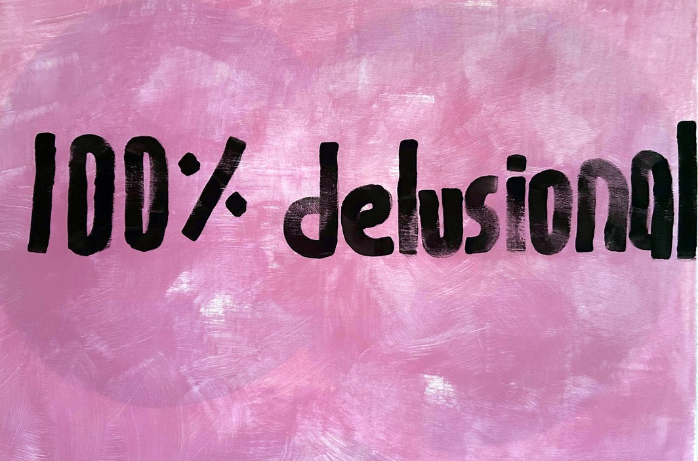
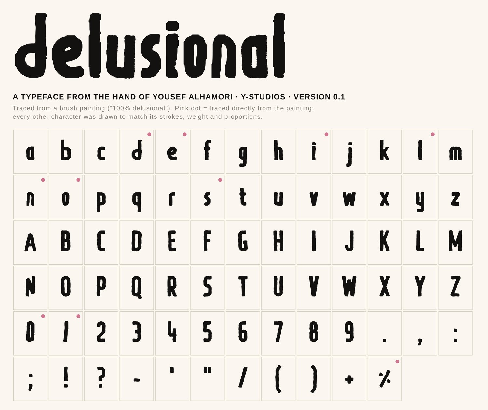
One typeface, four colors and a short list of rules for how the brand talks.
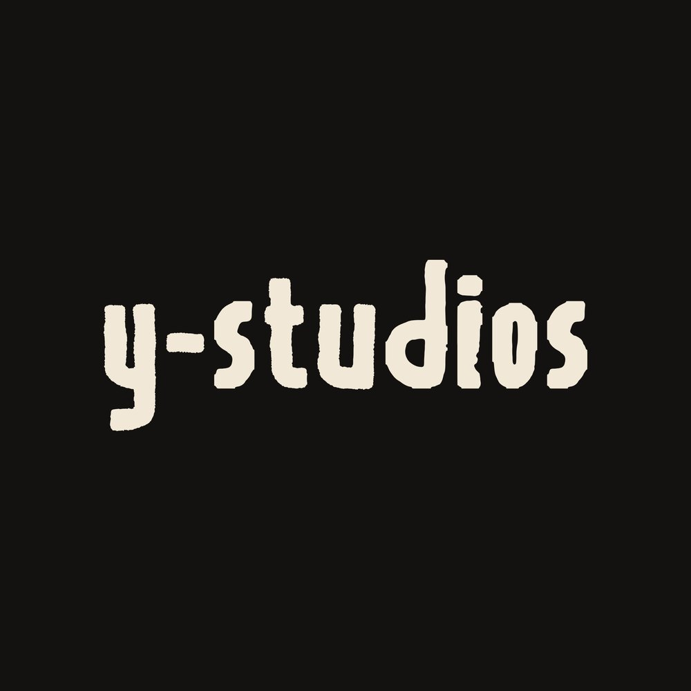
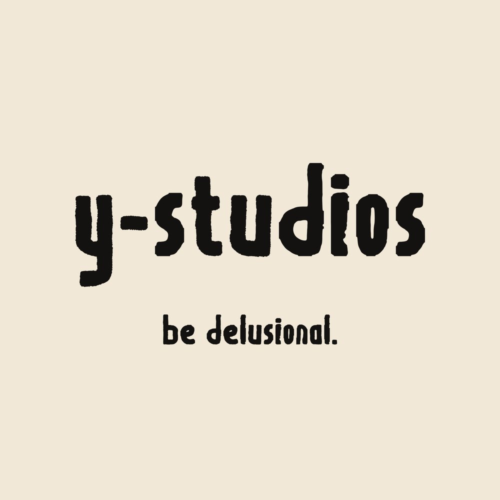
The first piece of content tells the origin story in six slides, written the way the brand talks. It is ready and has not been posted yet.
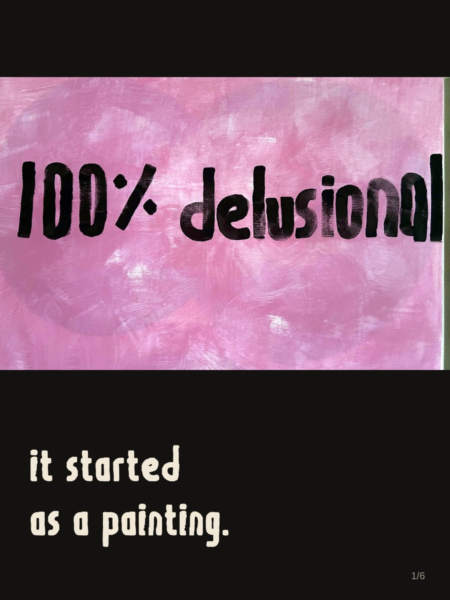
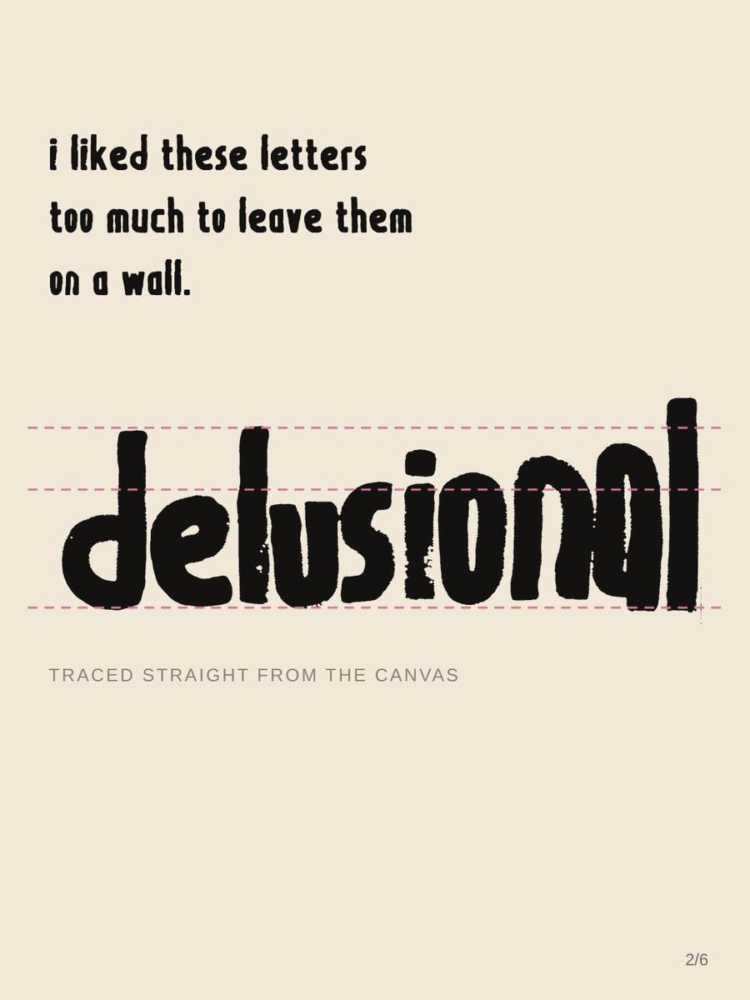
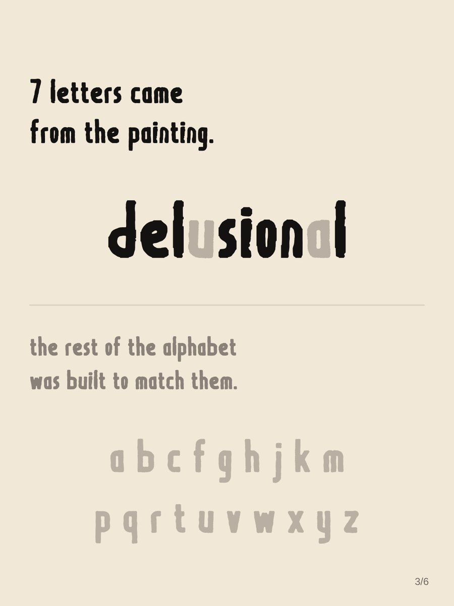
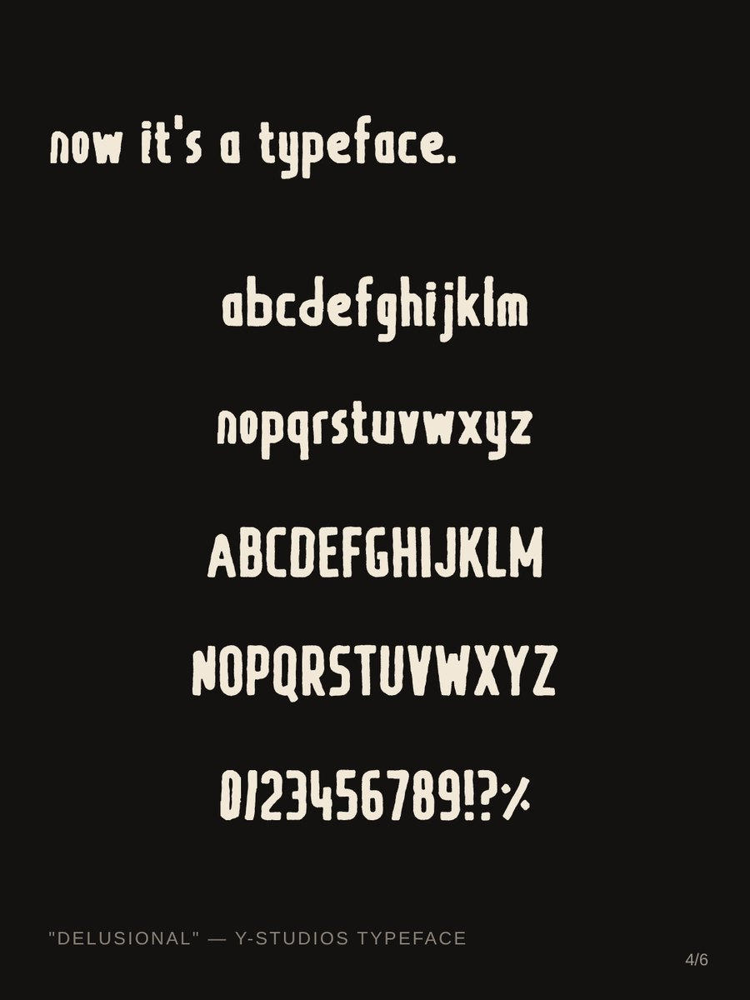
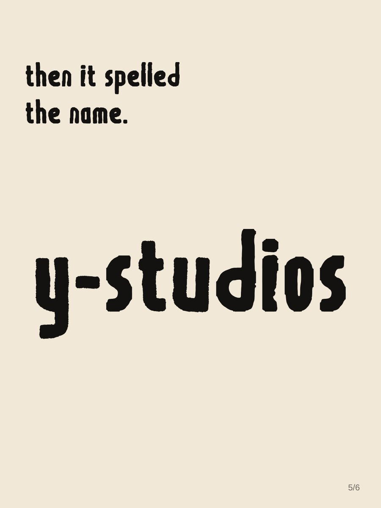
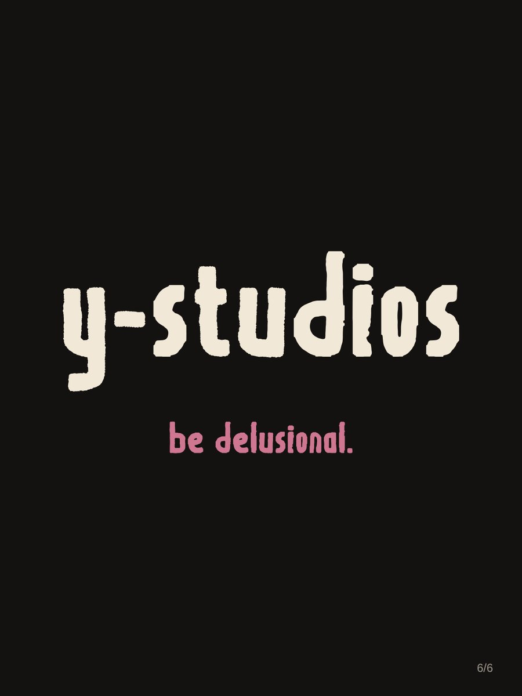
The profile icon, a feed post and the story template every product photo will sit in.
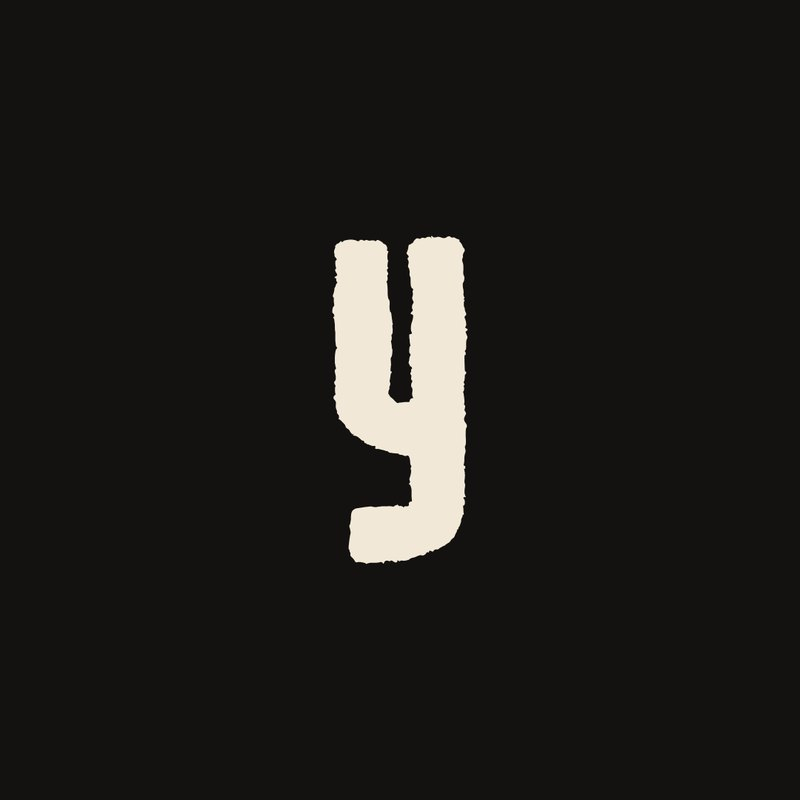
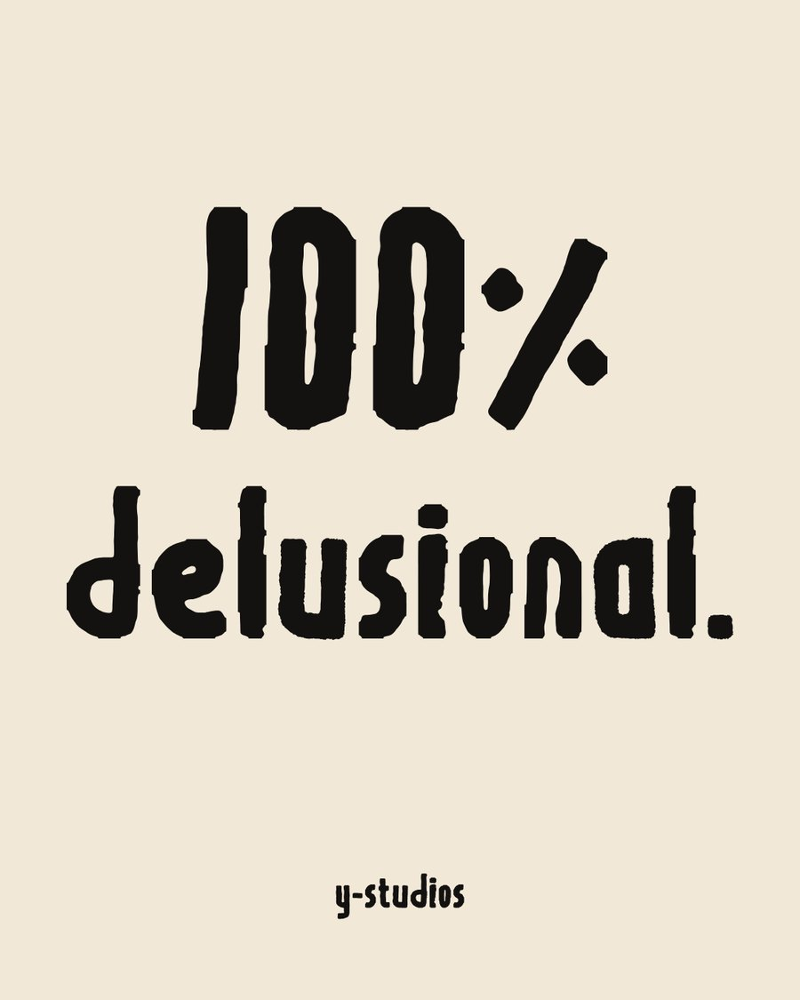
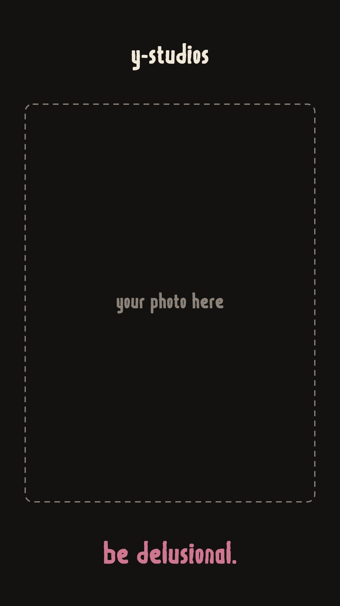